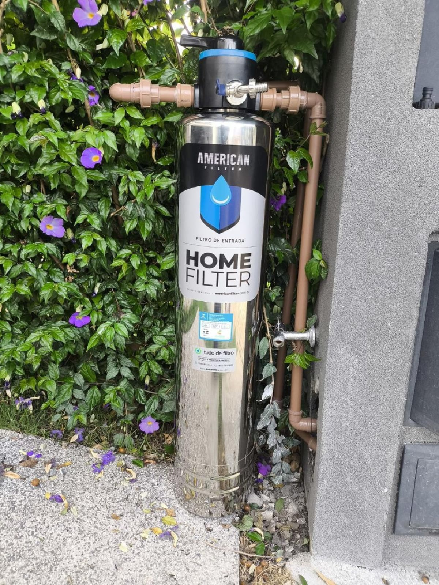
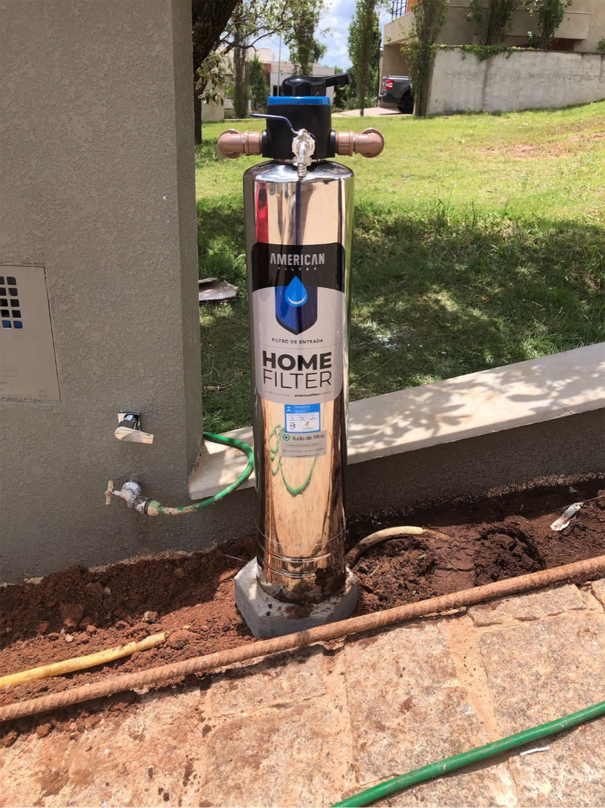
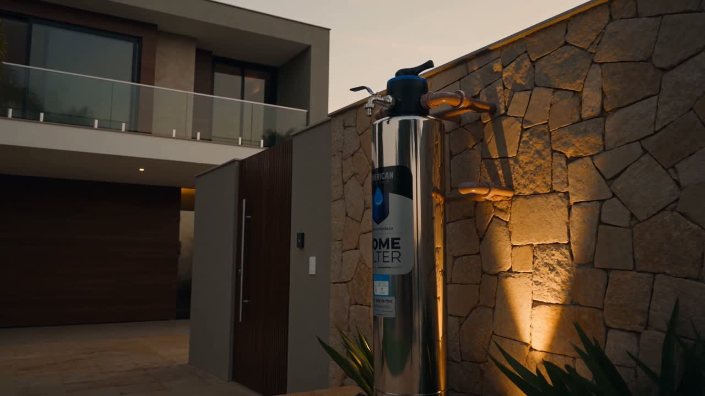
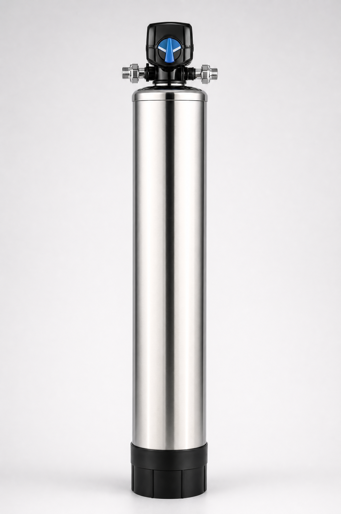
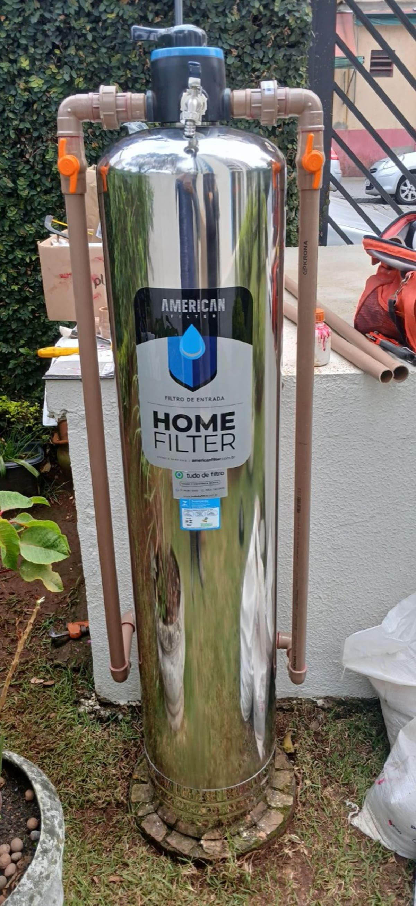
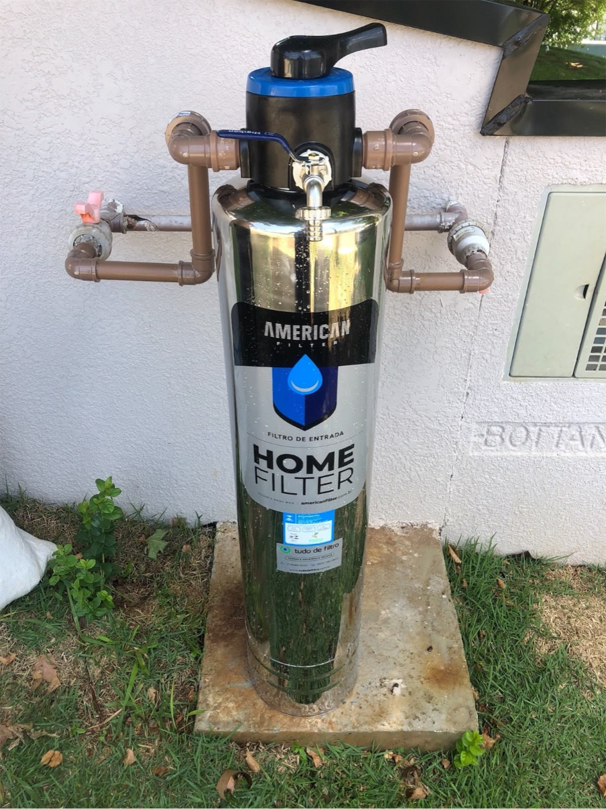
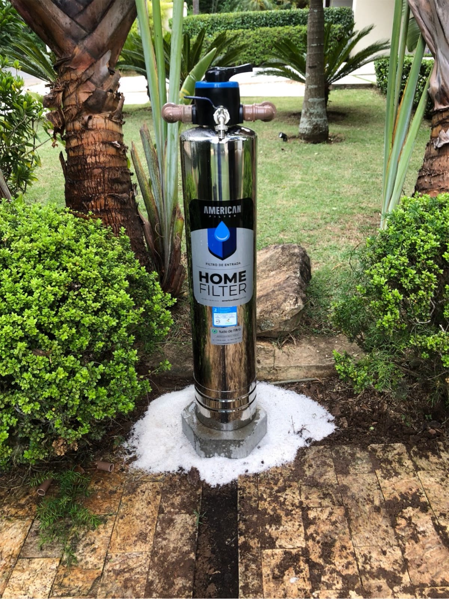
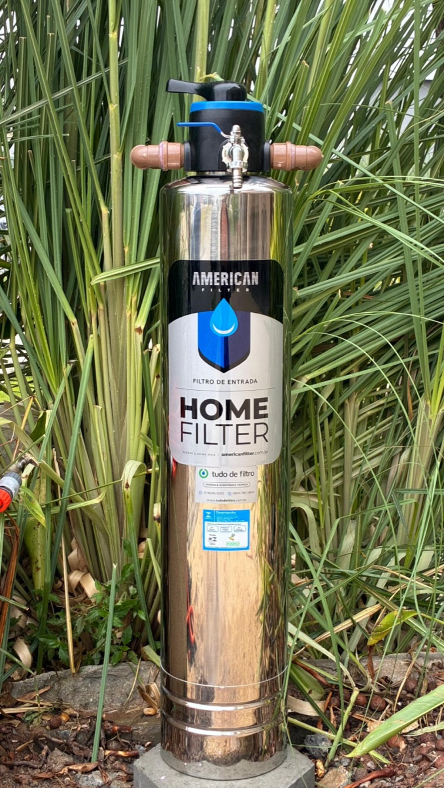

No banho
Água sem sedimentos no chuveiro, na ducha e na banheira.
Filtro de entrada · a casa inteira
Um único filtro instalado no cavalete, junto ao hidrômetro. Toda a água que entra no imóvel passa por ele — antes da caixa d'água, antes de cada torneira.
A água que chega na sua casa percorreu quilômetros de tubulação. No caminho, ela carrega o que não deveria: barro, areia, lodo e ferrugem. O American Filter trata toda a água logo na entrada e devolve a ela o que o caminho tirou. Em cada torneira.
Não é purificador de pia. É a casa inteira.
Água sem sedimentos no chuveiro, na ducha e na banheira.

Louça, panelas e o preparo dos alimentos, livres de barro e ferrugem.

A mesma água tratada na pia do banheiro, todos os dias.

A vasilha dele recebe a mesma água filtrada da casa toda.
Onde o American Filter trabalha

Da casa compacta à ampla — água tratada na entrada, em todas as torneiras, sem perda de pressão.

Alto volume e fluxo contínuo. Tratamento na entrada do prédio, protegendo a hidráulica de todos.

Vazão robusta para operações exigentes, com a maior garantia do Brasil.

O que você não vê, sente
Sedimentos como barro e ferrugem deixam a água escura, entopem o crivo do chuveiro e desgastam por dentro máquina de lavar, torneiras e aquecedor. O American Filter resolve na entrada — e cada equipamento da casa dura mais.
Engenharia da água
Quartzo de alta performance forma o leito que retém os sedimentos suspensos.
Mineral natural de estrutura porosa que potencializa a retenção de partículas finas.

Corpo em inox 304 com banho de níquel — resistência à altura de uma década de garantia.
Partículas até 10× mais finas que um fio de cabelo. Na prática: barro, areia, silte, lodo e ferrugem barrados antes de chegarem às suas torneiras.
Quatro tamanhos. Uma engenharia.

arraste para girar
Ø 10" · 54" de altura
até 2.500 litros/hora
Equilíbrio para apartamentos e casas de porte médio, com fluxo constante.
Confiança que se mede em anos
anos de garantia
a maior garantia do Brasil
certificação máxima
Simples por fora. Sofisticado por dentro.

Instalado de verdade



Programa de revenda American Filter
O American Filter não é mais um filtro no catálogo — é a categoria superior: filtro de entrada premium, em aço inox, certificado pelo Inmetro e com a maior garantia do Brasil. Você leva a marca; nós levamos o suporte.